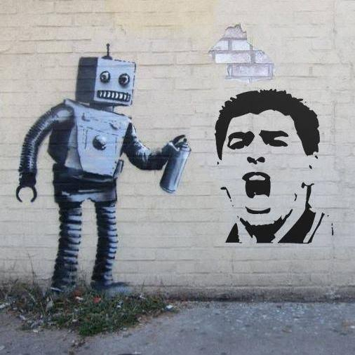
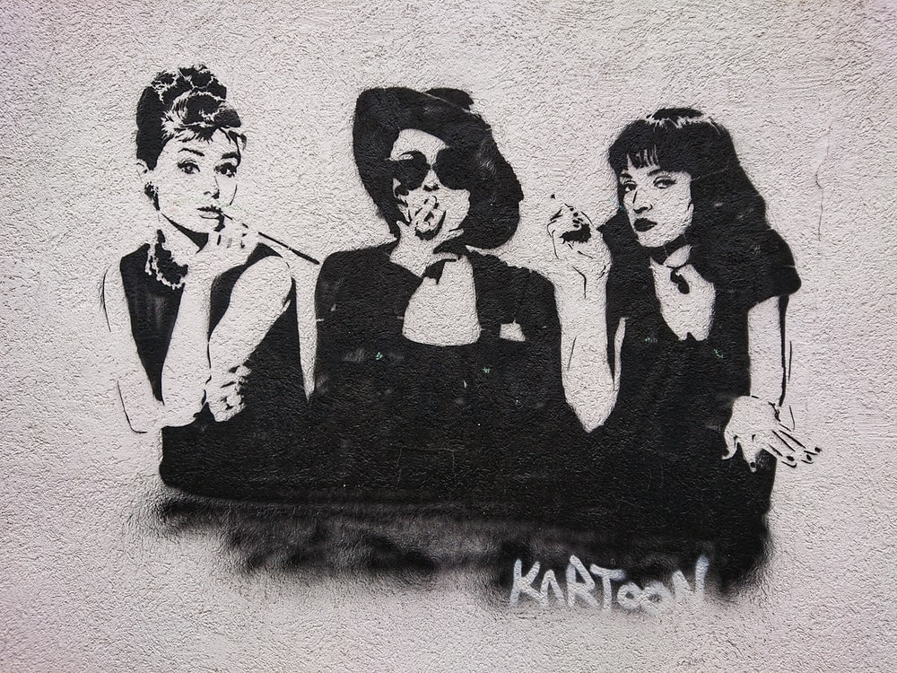

ARTE STENCIL Y ACTIVISMO
¿En qué consiste el stencil?
En inglés stencil significa plantilla. Esta técnica es muy sencilla y básicamente consiste en crear una imagen o forma en negativo recortando una superficie plana (por ejemplo, una cartulina) creando así la plantilla. A continuación, se coloca sobre un soporte y se aplica pintura en spray sobre ella, de forma que la imagen positiva queda plasmada sobre dicha superficie.
Historia del stencil
Proviene de los métodos decorativos japoneses y africanos, pero la técnica del esténcil más antigua proviene de España, con una antigüedad de 64.000 años.La referencia más clara del graffiti stencil que conocemos hoy en día tiene sus raíces en la Segunda Guerra Mundial. El ejército americano utilizaba plantillas para colocarlas sobre el equipamiento de sus distintas unidades de ataque y así poder marcarlas y reconocer a qué división pertenecían. En Europa, se comenzaron a ver los primeros stencils sobre muros y paredes con un sentido mucho más reivindicativo. Éstos se utilizaban para crear mensajes críticos con el gobierno, tiene como fin la propaganda politica. Décadas más tarde en los 70 fue utilizada por el movimiento punk en Reino Unido.
Stencil en Argentina
El arte de la plantilla es omnipresente en el arte callejero en estos días, pero en Buenos Aires la técnica tiene raíces políticas que son profundas. Con la crisis económica de 2001 vino una explosión del arte de estarcido. Una técnica que se había utilizado para la promoción y el activismo durante la mayor parte de un siglo fue subvertida por artistas que inventaron una potente combinación de imágenes surrealistas y comentarios sociales mordaces.